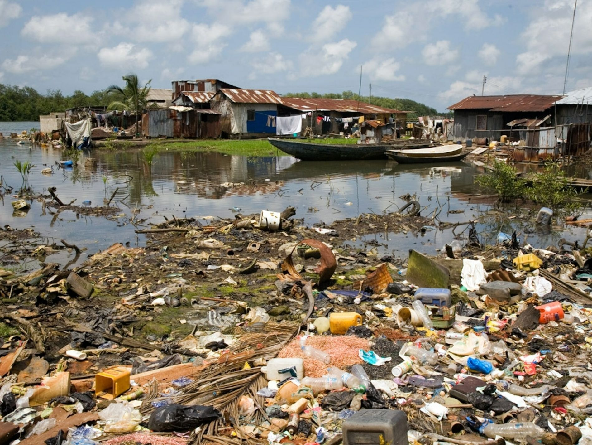
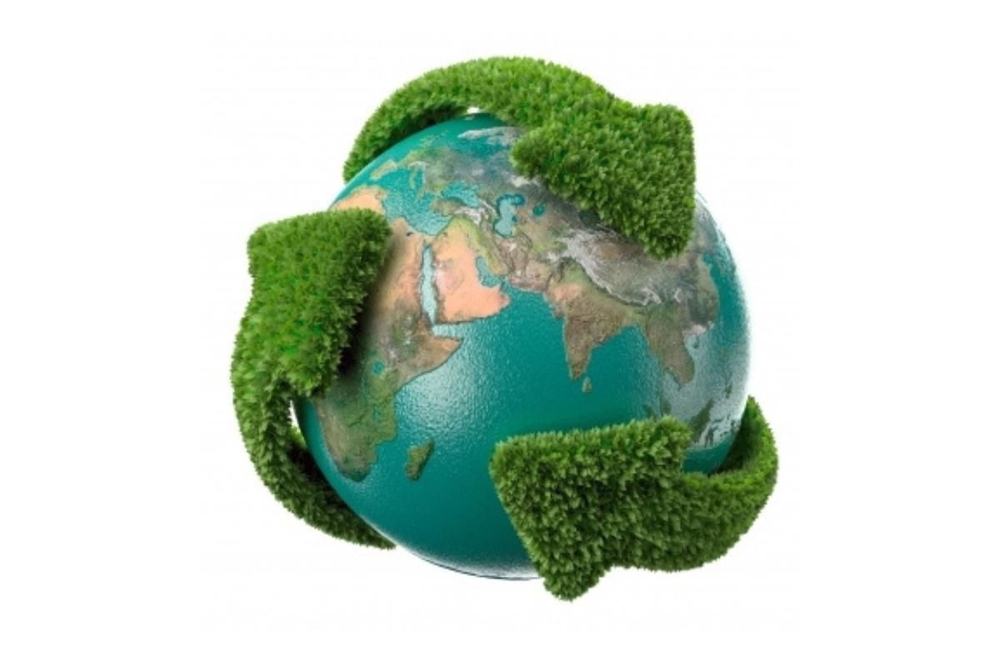

El agua es el eje de la vida en nuestro planeta. Cada ser vivo, desde
el más diminuto microorganismo hasta los humanos, depende de ella. En
nuestro caso, el agua nos ayuda a regular la temperatura corporal,
transportar nutrientes y mantener procesos vitales. En términos más
amplios, es el alma de los ecosistemas, permitiendo que ríos, océanos
y humedales alberguen una inmensa diversidad de especies.
Más allá de Sin embargo, el agua enfrenta múltiples desafíos, desde la
contaminación hasta la escasez causada por el cambio climático. Por
eso, nuestra relación con el agua debe ser de respeto y cuidado,
tomando acciones para conservarla y garantizar su acceso equitativo en
el futuro.

Desafios que afronta
El agua, aunque vital para la vida, enfrenta desafíos significativos que amenazan su disponibilidad y calidad en todo el mundo. Uno de los principales problemas es el cambio climático, que altera los patrones de precipitación y provoca sequías en algunas regiones, mientras que en otras genera inundaciones devastadoras. Estos cambios extremos afectan los suministros de agua dulce y complican la gestión de este recurso.

El agua, aunque vital para la vida, enfrenta desafíos significativos que amenazan su disponibilidad y calidad en todo el mundo. Uno de los principales problemas es el cambio climático, que altera los patrones de precipitación y provoca sequías en algunas regiones, mientras que en otras genera inundaciones devastadoras. Estos cambios extremos afectan los suministros de agua dulce y complican la gestión de este recurso.
Como cuidar el medio ambiente

Cuidar del medio ambiente es una responsabilidad que todos
compartimos para garantizar un futuro sostenible. El entorno
natural nos proporciona recursos esenciales como agua, aire limpio
y alimentos, pero su preservación depende de nuestras acciones. La
contaminación, la deforestación y el cambio climático son
problemas que requieren nuestra atención urgente. Adoptar
prácticas ecológicas, como el reciclaje, el uso responsable de los
recursos y la reducción de emisiones, puede marcar una diferencia
significativa.
Además, pequeñas acciones cotidianas pueden
contribuir al cuidado ambiental. Por ejemplo, optar por
transportes sostenibles, como la bicicleta o el transporte
público, ayuda a disminuir la huella de carbono. El uso de bolsas
reutilizables, el ahorro de energía y el consumo de productos
locales también son maneras efectivas de proteger nuestro entorno.
Al incorporar estos hábitos en nuestras vidas, podemos influir
positivamente en la salud del planeta y promover un equilibrio
ecológico.